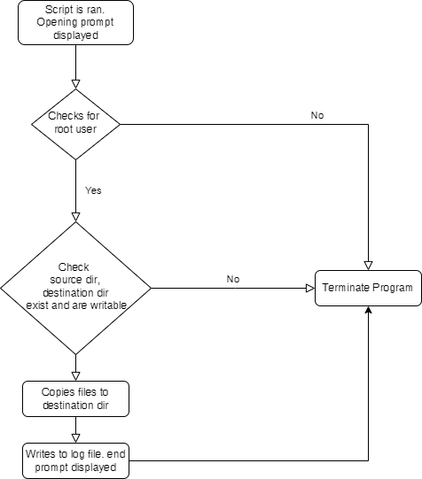
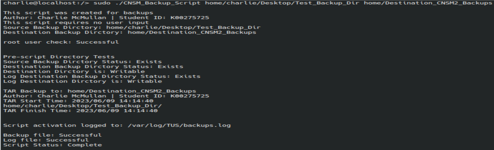

Project
Backup Bash Script
About
A user inputs the program name followed by the source and then destination directories for the backup. It must be run as root. The code will then perform a series of checks such as checking the user ID = 0 which is root and the directories specified exist and are writable. Once these checks are successful the source dir. is copied to the destination dir. A log of this backup is written to the log file specifying the time and user who performed it.
Example
